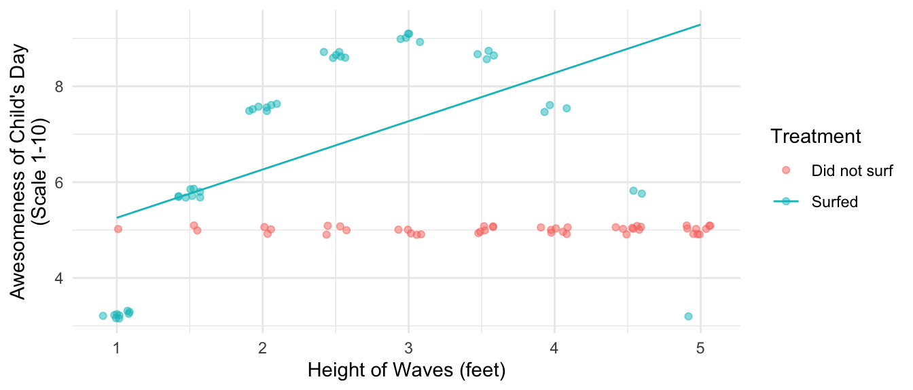
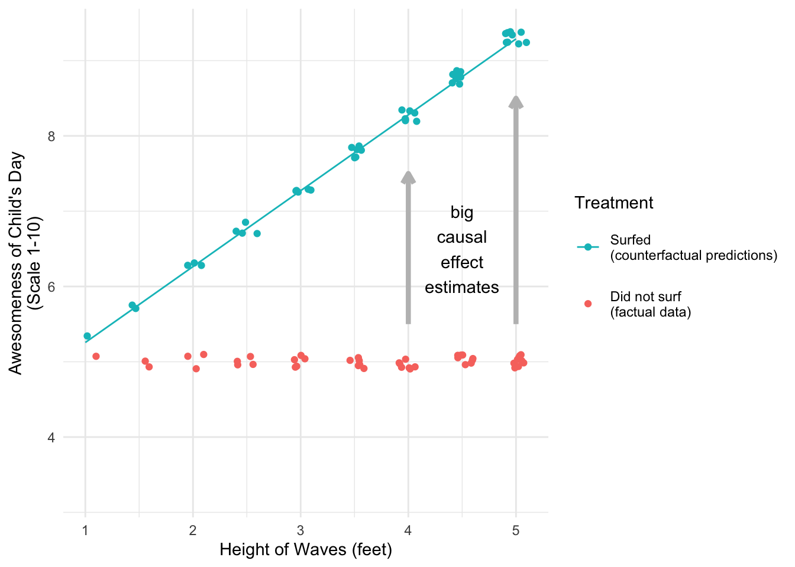
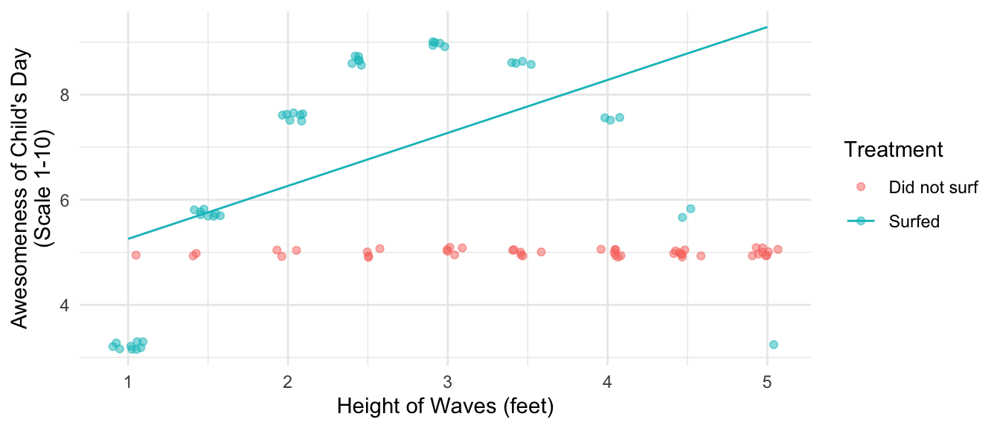

This session combines prediction and weighting methods for an approach with properties superior to either on its own. Here are slides.
A motivating example
A child loves to go surfing. Every day, the child either surfs or the child does not. At the end of every day, the child records the height of the waves that day and whether they surfed. They also record the awesomeness of their day on a scale from 1–10, with 10 being the most awesome. The figure below visualizes some hypothetical data. When the child doesn’t surf (red dots), the day is always mediocre (awesomeness = 5). When the child surfs, the awesomeness of the day depends on the wave quality. When the waves are only 1 foot high, the day is less awesome than surfing because the child is constantly struggling to catch anything. As the wave height increases, the awesomeness increases up to a wave height of 3 feet, which is the peak of awesomeness for this child. Above 3 feet, awesomeness begins to decline up through 5 foot waves, in which the child struggles against the overwhelming power of these large waves.
Code
library(tidyverse)data <-tibble(x =rep(1:9,1:9), a = F) |>bind_rows(tibble(x =rep(1:9,9:1), a = T)) |>group_by(x) |>mutate(pi =mean(a) ) |>ungroup() |>mutate(y1 =9-9* ((x -5) /5) ^2,y0 =5,# Shift x to fit story of this DGPx = (x -1) /2+1,y =case_when(!a ~ y0, a ~ y1 ) )theme_set(theme_minimal())data |>ggplot(aes(x = x, y = y, color = a)) +geom_jitter(width = .1, height = .1, alpha = .5) +scale_x_continuous(breaks =1:10,name ="Height of Waves (feet)" ) +labs(y ="Awesomeness of Child's Day\n(Scale 1-10)" ) +scale_color_discrete(name ="Treatment",labels =c("Did not surf","Surfed") )
The parent also plays an improtant role here. When the waves are small, the parent almost always allows the child to surf. As the waves get larger, there are more days when the parent does not allow the chid to surf. When the waves are 5 feet tall, the child surfs only very rarely (when the parent misjudges the size of the waves). As a result, when the child thinks about days that they surf, the child’s experience of surfing tends to be in 1–3 foot waves.
The child secretly aspires to be a statistician, and thus asks a causal question: how much more awesome would the days I did not surf have been, if I had counterfactually surfed on those days? The child’s causal estimand is the average treatment effect on the untreated observations.
To answer this causal question, the child uses linear regression:
Model (awesomeness) given (wave height), among days when they surfed
Predict the counterfactual awesomeness under surfing, for the days when they did not surf
Because most of the child’s surfing experiences are at the left side of the plot, the child fits a positive trend line: surfing days just get more awesome as the wave height increases. The child can easily forget about that bad 5-foot day; it was an anomaly that happened only once.
Code
fit1 <-lm(y ~ x, data = data |>filter(a))fitted <- data |>mutate(y =predict(fit1, newdata = data))data |>ggplot(aes(x = x, y = y, color = a)) +geom_jitter(width = .1, height = .1, alpha = .5) +scale_x_continuous(breaks =1:10,name ="Height of Waves (feet)" ) +labs(y ="Awesomeness of Child's Day\n(Scale 1-10)" ) +scale_color_discrete(name ="Treatment",labels =c("Did not surf","Surfed") ) +# Add the fitted linegeom_line(data = fitted |>mutate(a =TRUE) )

Knowledgable about outcome modeling for causal inference, the child proceeds to focus on the red dots: the days that they did not surf. For every red dot, the child predicts the counterfactual outcome: how awesome that day would have been if they had surfed. Especially on large-wave days, the model suggests the awesomeness would have been so much higher if the child had surfed!
Code
data |>ggplot(aes(x = x, y = y, color = a)) +geom_point(alpha =0, show.legend = F) +geom_jitter(data = data |>filter(!a), width = .1, height = .1) +geom_jitter(data = fitted |>filter(!a) |>mutate(a = T), width = .1, height = .1) +# Add the fitted linegeom_line(data = fitted |>filter(!a) |>mutate(a =TRUE) ) +#geom_segment(aes(yend = fitted), linetype = "dashed", color = "gray") +scale_x_continuous(breaks =1:10,name ="Height of Waves (feet)" ) +labs(y ="Awesomeness of Child's Day\n(Scale 1-10)" ) +scale_color_discrete(name ="Treatment",labels =c("Did not surf\n(factual data)","Surfed\n(counterfactual predictions)"),guide =guide_legend(reverse = T) ) +annotate(geom ="text", x =4.5, y =6.5, label ="big\ncausal\neffect\nestimates") +annotate(geom ="segment", x =c(4,5), y =c(5.5,5.5), yend =c(7.5,8.5), arrow =arrow(length =unit(.1,"in")),color ="gray", linewidth =1.5) +theme(legend.key.height =unit(.5,"in"))

As a result, the child overestimates the value of \(\tau\): the average non-surfing day would have been 1.6 points more awesome on average if the child had surfed, but the child’s linear model mistakenly estimates that it would have been 2.94 points more awesome.
What went wrong with the child’s model? The child’s model minimized squared error over the distribution of wave heights where surfing days were observed. These tended to be small-wave days. But the prediction task was to predict on the non-surfing days, which tended to be big-wave days!
We are always the child
When carrying out model-based causal inference, we must realize we are always the child. We always have a treatment (surfing) that is unequally distributed across the values of one or more confounders (wave height). We fit an outcome model on the data we observe (surfing on small-wave days) and then use that model to predict counterfactuals we don’t observe (which tend to be big-wave days). Finally, just like the child we often assume a simple model (e.g., a line) without realizing that the world is more complicated (in this case, a parabola).
The solution to the child’s problem will be a solution that we can apply in many cases.
Correcting the child’s wrong model
The child actually has other information relevant to the problem: the child knows the proportion of days surfed at each wave height. In this case, the probability of surfing declines linearly from 90% on 1-foot days to 10% on 5-foot days.
Code
data |>ggplot(aes(x = x, y = pi)) +geom_line() +geom_point() +ggtitle("Propensity Score") +labs(x ="Height of Waves (feet)",y ="Probability that Parent\nAllows Child to Surf" )
To be even more concrete, consider 5-foot wave days. The child knows that they surfed only 10% of these days. Every day surfed really stands in for 9 days not surfed. If we were estimating the average treatment effect on the untreated by weighting, we would weight the 5-foot day by \(\text{P}(\text{Not Surfed}\mid X = 5) / \text{P}(\text{Surfed} \mid X = 5) = .9 / .1 = 9\). We therefore might estimate the weighted error of the linear model, weighted by these weights.
In this case, the unweighted average error is 0 which is unsurprising: in OLS the average error in the training data is always 0! But here the goal is to predict in a shifted distribution of wave height. The inverse-probability-weighted error estimates the error on average over the space where we are making predictions: the model predictions are on average 1.34 points too high.
Augmented inverse probability weighting
If the child corrected for the error, they would be using an augmented inverse probability weighting estimator.
\[
\hat\tau_\text{AIPW} = \frac{1}{n_\text{Not Surfed}}\sum_{i:A_i=\text{Not Surfed}} \left(\hat{Y}_i^1 - Y_i\right) - \frac{\sum_{i:A_i=\text{Surfed}} w_i\left(\hat{Y}^1_i - Y_i\right)}{\sum_{i:A_i=\text{Surfed}} w_i}
\] where \(w_i\) is the inverse probability weight for estimating the average treatment effect on the untreated.
\[
w_i = \frac{\text{P}(A=\text{Not Surfed}\mid X = x_i)}{\text{P}(A=\text{Surfed} \mid X = x_i)}
\]
In this example, the outcome model is misspecified (a line for a parabola) but the weights are correct. Below, we see that the weights allow us to correct the wrong outcome model.
First, we generate simulated data for this example.
library(tidyverse)data <-tibble(x =rep(1:9,1:9), a = F) |>bind_rows(tibble(x =rep(1:9,9:1), a = T)) |>group_by(x) |>mutate(pi =mean(a) ) |>ungroup() |>mutate(y1 =9-9* ((x -5) /5) ^2,y0 =5,# Shift x to fit story of this DGPx = (x -1) /2+1,y =case_when(!a ~ y0, a ~ y1 ) )
We calculate the truth because in the simulation we know the potential outcomes.
truth <- data |># Restrict to the untreatedfilter(!a) |># Average difference in potential outcomessummarize(true_atc =mean(y1 - y0)) |>print()
# A tibble: 1 × 1
true_atc
<dbl>
1 1.6
Then we calculate an initial estimate via outcome modeling.
initial_estimate <- data |># Predict Y1mutate(yhat1 =predict(fit1, newdata = data)) |># Focus on the untreatedfilter(!a) |># Summarize an average effect estimate:# average of (predicted y1) - (observed y0)summarize(initial_estimate =mean(yhat1 - y)) |>print()
# A tibble: 1 × 1
initial_estimate
<dbl>
1 2.94
Third, we estimate the weighted mean error in the observed data.
weighted_mean_error <- data |># Predict Y1mutate(yhat1 =predict(fit1, newdata = data)) |># Focus on the treatedfilter(a) |># Construct inverse probability weights# where pi is the probability of treatmentmutate(weight = (1- pi) / pi) |># Summarize a weighted mean error:# weighted average of (predicted y1) - (observed y1)summarize(weighted_mean_error =weighted.mean(yhat1 - y, w = weight)) |>print()
# A tibble: 1 × 1
weighted_mean_error
<dbl>
1 1.34
Finally, our corrected estimate is the initial estimate with the weighted mean error subtracted.
In this case, the corrected estimate equals the true average treatment effect among the untreated! This numerical equivalence occurs because this simulation has known propensity scores and zero random error.
Double robustness
The example above illustrates a key property of the AIPW estimator: it is doubly robust, meaning that it is a consistent estimator as long as either
the model for treatment probabilities is consistent at each value of \(\vec{X}\), or
the model for potential outcomes is consistent at each value of \(\vec{X}\)
Below, we consider each of these in turn.
The example above illustrated the first property: as long as the estimator of the treatment probabilities is consistent for the true probabilities of treatment, then the AIPW estimator is consistent for the truth. This is true even if the outcome model is wrong, as shown by the child’s line above!
Although not illustrated above, the AIPW estimator is also correct if the outcome model is correct and the treatment model is wrong. To illustrate this, consider that at every value of \(\vec{X}\) an outcome model will be correct on average. Thus in a large sample, the average error at every value of \(\vec{X}\) will be 0. No matter how we take a weighted average across the \(\vec{X}\) values, the AIPW correction will always be 0! Thus the correct outcome model estimate will remain.
\[
\begin{aligned}
&\text{if}\quad &&\hat{\text{E}}(Y\mid A = 1, \vec{X} = \vec{x})\rightarrow \text{E}(Y\mid A = 1, \vec{X} = \vec{x})\quad \text{ for all }\vec{x},\\
&\text{then}\qquad &&\hat\tau_{\text{AIPW}}\rightarrow \tau
\end{aligned}
\]
Targeted learning
AIPW is not the only way to update a model. Another option is called targeted learning (Van der Laan and Rose 2011). We first introduce targeted learning through one concrete example, then generalize the procedure in the sections that follows.
Modeling \(Y^1\) for the ATC
In the surfing example, our goal is to estimate the mean outcome under surfing, for the observations on days when there was surfing. We begin with the child’s initial fit: linear regression. Following notation that is common in targeted learning,1 we will refer to this regression line as \(\hat{Q}^0\),
\[
\underbrace{\hat{Q}^0(\vec{x})}_{\substack{\text{The 0 superscript}\\\text{indicates an untargeted}\\\text{initial estimate}}} = \hat{\text{E}}(Y\mid A = 1, \vec{X}) = \hat\alpha + \hat\beta\vec{x}
\]
where \(\hat\alpha\) and \(\hat\beta\) are the OLS coefficients when modeling \(Y\) given \(X\) among the treated observations.
# Fitted modelq0_fit <-lm(y ~ x, data = data |>filter(a))# Function to return predictionsq0 <-function(x) {predict(q0_fit, newdata =tibble(x))}

The child’s model is targeted toward the observed data, but our target is actually to predict the counterfactual under surfing for the observations when the child did not surf. These are disproportionately at the right side of the figure. If we were estimating by inverse probability weighting, we would weight each treated observation by the ratio of untreated to treated observations given \(X\). For targeted learning, we will call this a “clever covariate” that we will define as function \(H()\).
\[
H(x) = \frac{\text{P}(A = \text{Not Surfed} \mid X = x)}{\text{P}(A = \text{Surfed}\mid X = x)}
\]
# Define the propensity scores# (assumed known in this example)propensity_scores <- data |>distinct(x,pi)# Define the clever covariate functionh <-function(x) {tibble(x) |>left_join(propensity_scores, by =join_by(x)) |>mutate(h = (1- pi) / pi) |>pull(h)}
The problem of non-targeted estimation is that our model errors are systematically related to the importance of each observation. To visualize this, create a graph with the clever covariate on the \(x\)-axis and the initial estimate errors on the \(y\)-axis.
The graph shows that the observed \(Y\) values (awesomeness of the day) were especially far below the predicted \(Y\)-values at the right side of the graph: big-wave days when the clever covariate is very large. The regression line is a best-fit line for the errors with intercept restricted to equal 0. Equivalently, it is a best-fit line for \(Y\) with the initial prediction \(\hat{Q}^0(X)\) included as an offset (an intercept with coefficient restricted to equal 1). The latter interpretation will be useful for generalizations.
\[
\hat{\text{E}}^1(Y\mid X = x) = \hat{Q}^1(x) = \hat{Q}^0(x) + \hat\gamma \underbrace{\left(\frac{\text{P}(A = \text{Not surfed}\mid X = x)}{\text{P}(A = \text{Surfed}\mid X = x)}\right)}_{\text{Clever covariate }h(x)}
\]
We can visualize the targeted outcome prediction function \(\hat{Q}^1\), which corrects for misspecification of the original model. It does not perfectly match the response surface, but its error equals zero on average over the space where predictions will be made. The targeted fit is nonlinear because the clever covariate is a nonlinear function of \(X\).
Code
data |>ggplot(aes(x = x, y = y, color = a)) +geom_jitter(width = .1, height = .1, alpha = .5) +scale_x_continuous(breaks =1:10,name ="Height of Waves (feet)" ) +labs(y ="Awesomeness of Child's Day\n(Scale 1-10)" ) +scale_color_discrete(name ="Treatment",labels =c("Did not surf","Surfed") ) +# Add the untargeted linegeom_line(data = fitted |>mutate(a =TRUE),aes(linetype ="Initial Fit Q0") ) +# Add the fitted linegeom_line(data = fitted |>mutate(y =q1(x)),aes(linetype ="Targeted Fit Q1") ) +labs(linetype =expression(Predicted~Y^{Surfed}~Values))
Now we return to our goal: estimating the counterfactual awesomeness of non-surfing days if the child had surfed on those days. We can now make two estimates, each of which compares the predicted outcomes under surfing (\(\hat{Q}^0(x)\) and \(\hat{Q}^1(x)\)) to the observed outcomes under no surfing.
In the section above, we focused on untreated cases and took the observed \(Y\) values as \(Y^0\) estimates instead of predicting from a regression model. More generally, we might be interested in both the treated and untreated cases (e.g., for an average treatment effect) and would need model-based estimates for both \(Y^0\) and \(Y^1\).
When modeling both potential outcomes, we begin with an initial estimate of the conditional mean function: linear regression estimated separately on the treated and untreated observations. As before, the 0 superscripts indicate that this is an initial estimate.
\[
\begin{aligned}
\hat{Q}^0(a,\vec{x}) &= \hat{\text{E}}^0(Y\mid A = a, \vec{X} = \vec{x}) = \begin{cases}
\hat\alpha_0 + \vec{x}'\hat\beta_0 &\text{if }a = 0 \\
\hat\alpha_1 + \vec{x}'\hat\beta_1 &\text{if }a = 1
\end{cases}
\end{aligned}
\] In code, we can estimate these two regression models
fit0 <-lm(y ~ x, data = data |>filter(!a))fit1 <-lm(y ~ x, data = data |>filter(a))
data |>summarize(initial_ate_estimate =mean(q0(1,x) -q0(0,x) ) )
# A tibble: 1 × 1
initial_ate_estimate
<dbl>
1 2.27
We know that this estimate is wrong because of the misspecified outcome model optimized over the observed data instead of the data to be predicted. To correct this misspecification, we define the clever covariate.
because the goal is the ATE, this is the inverse probability of treatment
because we difference (treatment) – (control), the control weight is negative
\[
H(a,x) = \begin{cases}
\frac{1}{P(A = 1\mid X)}&\text{if }a=1 \\
\frac{-1}{P(A = 0\mid X)}&\text{if }a=0
\end{cases}
\] To create this in code, we first note the propensity scores which are known in this example,
propensity_score <- data |>distinct(x,pi)
and then we write an h() function.
h <-function(a,x) {tibble(a, x) |>left_join(propensity_score, by =join_by(x)) |>mutate(h =case_when( a ==1~1/ pi, a ==0~-1/ (1- pi) ) ) |>pull(h)}
The graph below visualizes our \(h\) values on the \(x\)-axis and the errors of our initial model on the \(y\)-axis, with a line that corresponds to the targeting step to be completed below.
The targeting fit visualized in the model above is the linear regression of \(Y\) on \(H(A,X)\) (the clever covariate, which involves inverse probability weights), estimated with offset equal to the intial predictions \(Q^0(A,X)\).
The slope of the line in the figure above equals the coefficient estimate \(\hat\gamma\) in the equation above. In code, below we estimate the targeting regression model
q1_fit <-lm(y ~-1+offset(q0(a,x)) +h(a,x), data = data)
and then write a q1() function that will return targeted predictions at treatment value a and confounder value x.
data |>summarize(targeted_ate_estimate =mean(q1(1,x) -q1(0,x) ) )
# A tibble: 1 × 1
targeted_ate_estimate
<dbl>
1 1.6
Because this example is constructed with no random noise and known treatment probabilities, the targeted ATE estimate exactly matches the true ATE of 1.6.
Why TMLE vs AIPW?
Why would one choose TMLE over AIPW?
Both approaches solve the same problem: when building an outcome model for \(Y^1\), the model is learned over the confounder distribution \(\vec{X}\mid A = 1\) among treated units, but the goal is to predict over the distribution \(\vec{X}\mid A = 0\) among untreated units. When the outcome model is going to fit poorly in part of the space (e.g., due to model misspecification), then the first-stage model will optimize fit in the part of the space where it observes more data. But this may not be the same as the part of the space where predictions are to be made.
AIPW and TMLE solve this problem in related but distinct ways. In AIPW, the outcome model is corrected by the weighted average error where weights equal inverse probability of treatment weights. In TMLE, the outcome model is corrected by a second-stage regression that uses inverse probability of treatment weights as a “clever covariate” in a regression model.
Ultimately, both approaches are doubly robust. One advantage of TMLE arises when the outcome is binary, because then the second-stage regression can be a generalized linear model where the TMLE correction occurs on the space of the linear predictor. Thus, TMLE can be constructed to enforce boundaries such as never predicting probabilities below 0 or greater than 1.
In practice, I have not seen a clear resolution in favor of one or the other approach, and both approaches are likely to be good estimators. Any doubly-robust method may be preferable to the more typical approach of relying entirely on an outcome or treatment model!
Sample splitting for machine learning
Under classical statistical approaches to inference, one often worries about model misspecification. The problem of model misspecification is that if one approximates \(\text{E}(Y\mid A, \vec{X})\) by an additive regression and the true response function is nonlinear, then the model will be an inconsistent estimator of \(\text{E}(Y\mid\vec{X} = \vec{x})\) for at least some \(\vec{x}\). Double robustness solves this problem: as long as \(\text{E}(Y\mid\vec{X})\) or \(\text{P}(A = 1\mid\vec{X})\) is estimated by a consistent estimator, then the causal effect estimate is consistent.
Machine learning approaches seem to upend this logic: flexible models can be consistent estimators by construction. Without any assumption of a statistical model, a random forest can yield a consistent estimator of \(\text{E}(Y\mid A,\vec{X})\) and \(\text{P}(A = 1\mid\vec{X})\). By consistent, we mean that the forest would come to equal these estimands in an infinite sample. Does double robustness then have any use?
The problem with flexible machine learning estimators is that they converge to the true response surface at slower rates than parametric regression models. In finite samples, the estimators will be biased at some \(\vec{X} = \vec{x}\) values due to regularization. Thus, the key to machine learning estimators is to do use the same doubly robust formulation, with a small twist.
Using sample \(\mathcal{S}_1\), estimate two prediction functions \[
\begin{aligned}
\hat{g}(\mathcal{S}_1,a,\vec{x}) &= \hat{\text{E}}(Y\mid A = a, \vec{X} = \vec{x}) \\
\hat{m}(\mathcal{S}_1,a,\vec{x}) &= \hat{\text{P}}(A = a \mid \vec{X} = \vec{x}) \\
\end{aligned}
\]
If we drop the normalizing constant on the weights in the debiasing correction (which on asymptotically equals the number of treated observations), we get an estimator that can be written as an empirical mean \(\hat{\text{E}}_{\mathcal{S}_2}\) over the cases in sample \(\mathcal{S}_2\).
When \(\hat{g}\rightarrow g\) and \(\hat{m}\rightarrow m\) at slower asymptotic rates than we ordinarily observe for linear regression, it is still possible for \(\hat\tau\rightarrow \tau\) at the ordinary \(\sqrt{n}\) asymptotic rate. In other words, even if you estimate a \(\hat{g}\) and \(\hat{m}\) with random forests, it is possible for \(\hat\tau\) to converge to the true expected potential outcome at a rate with good properties! A key for this to happen is that \(\hat{g}\) and \(\hat{m}\) are learned in a separate sample from the one in which they are applied.
Cross fitting
Similar to the move from a train-test split to cross-validation, one can make a similar move from sample splitting to a technique called cross fitting.
In sample \(\mathcal{S}_1\), estimate the outcome model \(g(\mathcal{S}_1,a,\vec{x})\) and treatment model \(\hat{m}(\mathcal{S}_1,a)\).
In sample \(\mathcal{S}_2\), produce an AIPW estimate.
Repeat steps (1) and (2), swapping the roles of \(\mathcal{S}_1\) and \(\mathcal{S}_2\).
Average the results.
Exercises
Carry out the child’s analysis by
an outcome model.
inverse probability weighting, with weights estimated by logistic regression
augmented inverse probability weighting
Footnotes
The targeted learning literature typically uses \(Q^0\) instead of \(\hat{Q}^0\), but we use the hat for consistency within this webpage that estimated quantities always have hats.↩︎